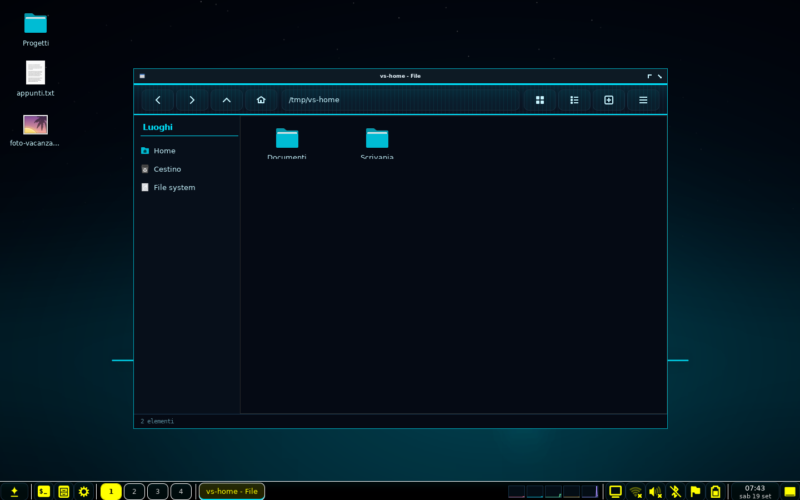
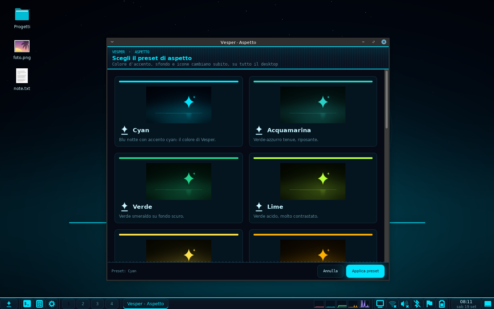
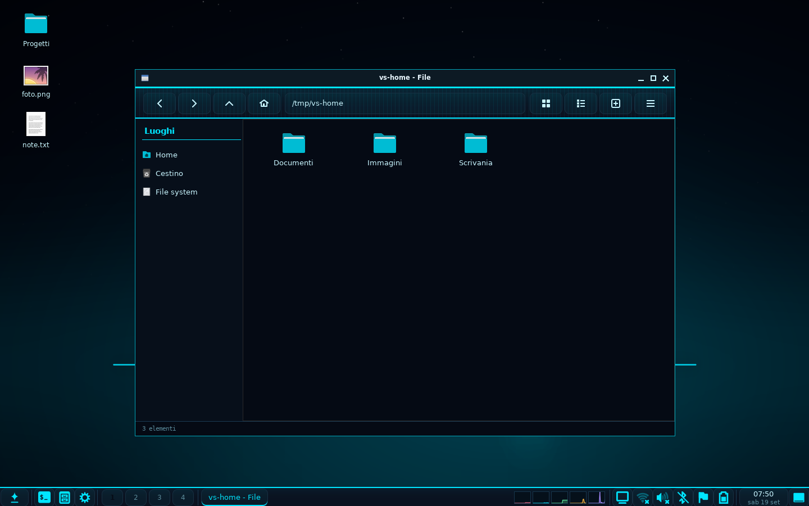

Manuale
Tutto quello che serve per installare e usare Vesper, dall'accesso al primo preset. Se qualcosa non torna, in fondo c'è la parte sui problemi comuni.
1. Installare
Debian, Ubuntu, Linux Mint
sudo apt install ./vesper_0.3.0_all.deb
Il pacchetto tira dietro le dipendenze da solo. Per toglierlo:
sudo apt remove vesper (la configurazione in
~/.config/vesper resta).
Qualsiasi distribuzione, dai sorgenti
tar xzf vesper-0.3.0.tar.gz && cd vesper-0.3.0 sudo ./install.sh --prefix=/usr # come i pacchetti della distro sudo ./install.sh # in /usr/local ./install.sh --user # in ~/.local, senza root sudo ./install.sh --uninstall # disinstalla
DESTDIR=/tmp/pkg ./install.sh serve a chi impacchetta. Nel
repository ci sono già le ricette per Arch (packaging/arch/PKGBUILD),
Fedora/openSUSE (packaging/rpm/vesper.spec) e Alpine
(packaging/alpine/APKBUILD).
Dove finiscono i file
<prefisso>/bin/vesper-* comandi <prefisso>/lib/vesper/ pacchetto Python <prefisso>/share/vesper/ sfondi, skin, preset <prefisso>/share/themes/ temi delle finestre <prefisso>/share/xsessions/vesper.desktop voce di sessione ~/.config/vesper/ configurazione dell'utente ~/.cache/vesper/ log e roba rigenerabile
2. Primo avvio
Esci dalla sessione, e nella schermata di accesso scegli Vesper
dall'elenco delle sessioni (di solito è un'icona a forma di ingranaggio o il
nome della sessione accanto al campo della password). Al primo accesso
Vesper crea la sua configurazione in ~/.config/vesper e applica
il preset predefinito.
Il log della sessione sta in ~/.cache/vesper/session.log: è il
primo posto dove guardare se qualcosa non parte.
3. Il pannello

Da sinistra: il menu (la stella), i lanciatori di terminale, file manager e Centro di Controllo, i desktop virtuali e la lista delle finestre. A destra: monitor delle risorse, schermi, rete, audio, microfono, Bluetooth, lingua, batteria, orologio e "mostra desktop".
- Menu: ha una ricerca che filtra dal vivo le applicazioni installate, raggruppate nelle categorie standard.
- Orologio: un clic apre il calendario, con la regolazione di ora, data e fuso orario.
- Posizione: la barra si sposta in alto o in basso dal menu stesso o dal Centro di Controllo → Pannello.
- Più monitor: una barra per schermo, e il menu si apre su quello dove hai cliccato.
4. Aspetto: i preset

Un preset è un look completo: colore d'accento, sfondo, set di icone, tema GTK e decorazione delle finestre. Si sceglie dal menu (Aspetto: ...), dal Centro di Controllo o da terminale:
vesper-profile # selettore grafico vesper-profile list # elenco dei preset vesper-profile set viola # applica vesper-profile style vetro # stile finestre: flat | vetro | telaio | aero
Le icone e il tema GTK seguono il colore del preset: Vesper usa i set del colore giusto fra quelli installati (le varianti Mint-Y e simili). Si può anche fissarne uno dal Centro di Controllo → Tema GTK e icone.
Sfondo
vesper-wallpaper list # gli sfondi di serie vesper-wallpaper set ~/foto.jpg # un'immagine tua vesper-wallpaper mode fit # stretch | fit | center | tile vesper-wallpaper reset # torna a quello del preset
Le finestre
Vesper sceglie da solo: se c'è marco (o metacity)
usa le decorazioni vere di Mint nel colore del preset, altrimenti Openbox con
le proprie. Per cambiare:
vesper-wm # mostra la scelta e cosa è disponibile vesper-wm marco # decorazioni di Mint vesper-wm openbox # decorazioni di Vesper vesper-wm auto # lascia decidere a Vesper (predefinito)
Ha effetto al prossimo accesso.
Skin del pannello
La barra può seguire il preset oppure avere una palette fissa (HUD, scuro,
chiaro, Nord, Solarized, Terminal Green, Ambra, alto contrasto, nero,
bianco): Centro di Controllo → Aspetto coordinato. Le skin sono
file CSS: mettendone uno in ~/.config/vesper/panel-themes/
compare nell'elenco.
5. File e desktop

vesper-files apre la finestra; vesper-files --desktop
è la modalità che disegna sfondo e icone del desktop (la avvia la sessione).
- Schede (Ctrl+T), viste a icone ed elenco, barra dei luoghi con le cartelle XDG, il cestino e i segnalibri di GTK.
- Copia, taglia e incolla asincroni con avanzamento; i nomi in conflitto diventano file (2).
- Canc sposta nel cestino, Maiusc+Canc elimina davvero (con conferma).
- Sul desktop le icone si posizionano liberamente e restano dove le metti; il tasto destro apre il menu con le azioni.
6. Scorciatoie
| Tasti | Azione |
|---|---|
| Super+C | Centro di Controllo |
| Super+T | Terminale |
| Super+E | File manager |
| Super+P | Preset di aspetto |
| Super+L | Blocca lo schermo |
| Super+D | Mostra il desktop |
| Super+V | Cronologia degli appunti |
| Super+N | Filtro luce blu |
| Stamp | Cattura schermata |
| Super+Stamp | Cattura di un'area |
Si modificano dal Centro di Controllo → Tasti rapidi. Vesper
scrive dove le cerca il gestore finestre in uso: nel proprio
~/.config/vesper/openbox-rc.xml con Openbox (conservando
commenti e formattazione), oppure nelle impostazioni di marco/metacity
quando la sessione usa le decorazioni di Mint (lì i posti per i comandi
sono dodici, è un limite loro). vesper-keys backend dice
quale dei due è attivo.
Nel visualizzatore di immagini
vesper-viewer sfoglia la cartella dell'immagine aperta:
Pag su/Pag giù (o la rotella) per cambiare foto,
Ctrl+rotella per lo zoom, Ctrl+0 per
adattarla e Ctrl+1 per la dimensione reale,
Ctrl+R per ruotare, F5 per la
presentazione, F11 per lo schermo intero,
Ctrl+B per metterla come sfondo del desktop e
Canc per spostarla nel cestino. L'elenco completo è dentro il
programma con Ctrl+Maiusc+H.
Nell'editor di testo
vesper-editor ha le sue, tutte elencate dentro il programma
con Ctrl+Maiusc+H.
| Tasti | Azione |
|---|---|
| Ctrl+N / O / S | nuovo, apri, salva |
| Ctrl+W / Q | chiudi la scheda, esci |
| Ctrl+F / H, F3 | trova, sostituisci, occorrenza successiva |
| Ctrl+I | vai a riga |
| Ctrl+D / Ctrl+Maiusc+D | elimina, duplica la riga |
| Alt+Su / Giù | sposta la riga |
| Ctrl+/ | commenta o decommenta |
| Ctrl++ / - / 0 | dimensione del testo |
| Ctrl+PagSu / PagGiù, Alt+1…9 | cambia scheda |
7. Comandi
| Comando | A cosa serve |
|---|---|
vesper-session | avvia la sessione (lo chiama il gestore di accesso) |
vesper-panel | la barra |
vesper-control-center [vista] | impostazioni; vesper-control-center --help elenca le viste |
vesper-files [cartella] | file manager; --desktop per sfondo e icone |
vesper-profile | preset di aspetto |
vesper-wallpaper | sfondo |
vesper-wm | gestore finestre e decorazioni |
vesper-lang | lingua dell'interfaccia |
vesper-screensaver | salvaschermo e blocco schermo |
vesper-logout | dialogo di fine sessione |
vesper-editor [+riga] [file…] | editor di testo con colorazione della sintassi |
vesper-viewer [file o cartella] | visualizzatore di immagini |
vesper-player, vesper-video | lettore audio e riproduttore video |
vesper-recorder | registratore vocale (salva in ~/Musica/Registrazioni) |
vesper-disks | dischi e chiavette: elenco, montaggio, smontaggio |
vesper-keys | scorciatoie del desktop (usato dal Centro di Controllo) |
vesper-launcherd, vesper-launch | avvio «caldo» delle finestre: --status, --stop |
vesper-zram | memoria compressa: status, enable [%], disable |
vesper-screenshot, vesper-clipboard, vesper-nightlight, vesper-screens, vesper-audio, vesper-wifi, vesper-bluetooth, vesper-battery, vesper-brightness | utilità richiamate dal pannello e dalle scorciatoie |
8. Configurazione
Tutto sotto ~/.config/vesper/, file di testo modificabili a mano:
| File | Contenuto |
|---|---|
profile | preset attivo |
accent.css, window-style.css | generati dal preset (non si modificano a mano) |
wallpaper, wallpaper-mode | sfondo scelto e adattamento |
panel.conf, panel-theme | barra: posizione, altezza, icone, skin |
icon-theme, gtk-theme, theme, window-style | scelte di icone, tema GTK e finestre |
ui-mode | interfaccia chiara o scura: auto, chiaro, scuro |
wm | gestore finestre: auto, openbox, marco, metacity |
openbox-rc.xml, openbox-menu.xml | configurazione del gestore finestre (solo di Vesper) |
desktop-items.json | posizione delle icone sul desktop |
lang | lingua dell'interfaccia |
Vesper non tocca ~/.config/openbox: se usi Openbox anche per
conto tuo, la tua configurazione resta intatta.
Memoria compressa (zram)
La zram è uno swap che vive nella RAM e tiene i dati compressi: invece di
scrivere sul disco, comprime (con zstd tre o quattro volte). Conta
soprattutto sotto i 2,5 GB di memoria e nelle sessioni live, dove il
sistema sta già in RAM; con molta memoria cambia poco. Vesper
non la accende mai da solo: lo swap è configurazione di
sistema. Lo stato si vede in Centro di Controllo →
Memoria compressa, che dice anche se ci sono due gestori
installati insieme (capita con zram-tools accanto a
systemd-zram-generator: uno dei due fallisce a ogni avvio).
L'attivazione è esplicita, chiede i privilegi e scrive
/etc/systemd/zram-generator.conf; senza systemd attiva la
zram per la sessione e stampa la riga da mettere nell'avvio della propria
distribuzione.
Avvio «caldo» delle finestre
La sessione avvia vesper-launcherd, un processo che tiene GTK
e i moduli del desktop gia' importati e apre le finestre dentro di se':
Centro di Controllo, preset, file manager, visualizzatore di immagini e
dischi partono in qualche
decina di millisecondi invece di ripagare ogni volta il costo degli
import — si sente soprattutto su live, VM e dischi lenti. Se il servizio
non gira, i comandi partono nel modo normale: non e' mai una dipendenza.
vesper-launcherd --status dice se e' attivo,
--stop lo ferma. L'editor e i lettori multimediali restano
processi a se': il primo puo' avere documenti non salvati, i secondi
portano dentro le pipeline di GStreamer.
Costa circa 33 MiB di memoria: su una macchina con poca
RAM si spegne con vesper-launcherd --off (si riaccende con
--on), e le finestre torneranno ad aprirsi in circa mezzo
secondo invece che in qualche decina di millisecondi.
Quanta memoria occupa Vesper
Una sessione completa — pannello, icone del desktop, avvio caldo e Openbox — occupa circa 120 MiB; senza l'avvio caldo ~87 MiB, e il solo pannello con il gestore finestre ~47 MiB. La misura è in PSS, la quota di memoria che tocca davvero a ogni processo: sommare gli RSS conta la stessa copia di GTK una volta per processo e gonfia il totale. Di quei numeri circa 30 MiB per processo sono GTK3 stessa; il codice di Vesper ne aggiunge 2-5, e un desktop scritto in C sulla stessa libreria parte dalla stessa base.
L'indicatore RAM del pannello è un'altra cosa: mostra la memoria
non disponibile di tutto il sistema (lo stesso criterio
di free, cioè 1 - MemAvailable/MemTotal), quindi
comprende servizi, X, tmpfs e la cache dei file — che il kernel libera
appena qualcuno ne ha bisogno. Per sapere quanto è Vesper e quanto è il
resto c'è vesper-ram, che spacca il totale e elenca i primi
consumatori.
9. Se qualcosa non va
Tornando in MATE o XFCE trovo tema e scorciatoie cambiati
Succedeva con le versioni fino alla 0.4.1: Vesper scriveva il tema GTK, le icone e — con marco o metacity — decorazioni e scorciatoie globali, che sono impostazioni dell'utente, condivise con gli altri desktop, e non le salvava prima. Da questa versione la sessione le fotografa all'avvio e le rimette all'uscita, e fuori dalla sessione Vesper non tocca nulla. Per rimediare a un'installazione precedente:
vesper-riparaRimette i valori della fotografia, se c'è, altrimenti riporta tutto ai valori della distribuzione. Poi si rientra nella propria sessione.
Il pulsante «Esci» non chiude la sessione
Anche questo è risolto: prima si eseguiva openbox --exit, che
non ha effetto se il gestore finestre è marco o metacity (e in
auto Vesper li preferisce, per le decorazioni Mint). Ora l'uscita
passa da vesper-session --logout, che chiude la sessione
qualunque sia il gestore in uso.
La sessione non parte
Guarda ~/.cache/vesper/session.log. Il caso più comune è il
gestore finestre mancante: serve openbox oppure
marco/metacity.
La voce "Vesper" non compare al login
Il file di sessione deve stare in /usr/share/xsessions/vesper.desktop.
Con l'installazione utente (--user) finisce in
~/.local/share/xsessions, che alcuni gestori di accesso non
leggono: in quel caso installa con sudo.
Il Centro di Controllo non si apre
Il suo log è ~/.cache/vesper/control-center.log.
Le icone non seguono il colore del preset
Vuol dire che i set di quel colore non sono installati. Su Debian/Ubuntu/Mint
si aggiungono con sudo apt install mint-y-icons mint-themes;
altrimenti si sceglie un set fisso dal Centro di Controllo.
Il pannello è sparito
vesper-panel-restart
Tornare indietro
Vesper non modifica la configurazione degli altri desktop: basta scegliere
la sessione di prima al login. Per rimuoverlo del tutto:
sudo apt remove vesper oppure
sudo ./install.sh --uninstall.